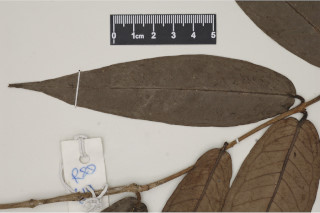
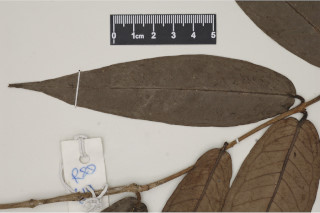

Images :

 



| Habit : | Trees up to 8 m tall. |
| Leaves : | Leaves simple , opposite , decussate ; petiole to 0.4-0.8 cm long, canaliculate ; lamina 15-28 x 3.5-6.5 cm, lanceolate , apex gradually long acuminate , base cordate or subcordate , margin entire , chartaceous to coriaceous , pellucid gland dotted, glabrous , midrib canaliculate above; intramarginal nerves present; secondary_nerves 16-22 pairs, strong beneath; tertiary_nerves reticulo-percurrent . |
| Inflorescence / Flower : | Inflorescence in terminal cymes ; flowers large, pink or white; calyx tapering in to pedicel . |
| Fruit and Seed : | Berry , greenish pink, 3.8 cm across, crowned with persistent calyx . |